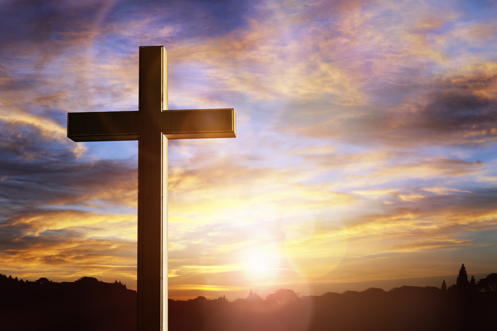

Kdo jsou baptisté?
Jsme křesťanská reformační církev, která má kongregační zřízení. To znamená, že každý sbor je samostatný a každý člen má právo zasahovat do sborových záležitostí. Jednotlivé sbory jsou pak sdruženy do jednot (na národní úrovni), tak do kontinentálních seskupení a světového svazu baptistů.
Historické kořeny
Název baptisté má svůj původ v řeckém slově označujícím "ponoření" neboli křest. Baptisté se hlásí k hnutí radikálního křídla světové reformace, které na počátku 16. století začalo praktikovat křest na vyznání víry, to znamená křest věřících, kteří svoji víru vyznávají na základě osobního rozhodnutí (na rozdíl od křtu nemluvňat). Protože se v případě zakladatelů tohoto hnutí jednalo vlastně o druhý křest, protože poprvé byli pokřtěni jako nemluvňata, dostalo se jim jména "anabaptisté" – novokřtěnci.
Novokřtěnci pro své vyznání zakusili mnohé útrapy. Ze Švýcarska a Německa se nedobrovolně dostali na jižní Moravu, kde se jim říkalo Habáni. Po bitvě na Bílé hoře však byli nuceni pokračovat ve své nechtěné pouti dále na východ.
Vyznání víry
Baptisté mají spolu s ostatními křesťanskými církvemi společné vyznání víry:
Věřím v Boha, Otce všemohoucího,
Stvořitele nebe i země, i v Ježíše Krista,
Syna jeho jediného, Pána našeho,
jenž se počal z Ducha svatého,
narodil se z Marie panny,
trpěl pod Pontským Pilátem,
byl ukřižován, umřel a byl pohřben,
sestoupil do pekel,
třetího dne vstal z mrtvých,
vstoupil na nebesa,
sedí na pravici Boha, Otce všemohoucího,
odkud přijde soudit živé i mrtvé.
Věřím v Ducha svatého,
svatou církev obecnou,
svatých obcování, hříchů odpuštění,
těla z mrtvých vzkříšení a život věčný.
Členy sboru se mohou stát jen ti, kteří prožili znovuzrození z Ducha svatého a vyznávají svoji víru před sborovým shromážděním. Na vyznání své víry jsou pak pokřtěni ponořením do vody. Přijmutím do sboru na sebe berou věřící závazek žít podle nároků Božího slova, které mluví do osobního i církevního života.
